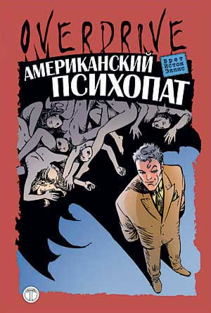

Брет Истон Эллис • Американский психопат • Перевод: Владимир Ярцев, Татьяна Покидаева • overdrive • 18.08.2003

Один из самых влиятельных и талантливых писателей Generation X, Брет Истон Эллис (р. 1964) — плоть от плоти принадлежит эпохе «массового потребления» и псевдо-иронического наплевательского отношения к окружающему миру, известной как «Гнилые Восьмидесятые Поколения Свиней». В 1991 году он буквально ворвался на первые полосы газет с абсолютно убойным хитом — романом «Американский психопат». Чудовищно жестокая, бесстыдно аморальная история серийного убийцы-яппи вызвала невероятный скандал среди читателей и в прессе.
Пресса
Американские писатели об «Американском психопате» Эллиса
Брет Истон Эллис – очень-очень хороший писатель. “Американский Психопат” – превосходно структурированный, детализированный и важный роман: задача писателя состоит в том, чтобы внимательно следить за прогрессом культуры; и Брет Истон Эллис делает это великолепно: Эпохальная Книга! (Фэй Уэлдон, The Washington Post)
Мастерская сатира и жестокое, веселое, амбициозное и вдохновляющее произведение, во многом перекликающееся с лучшими образцами уничтожающей язвительности Джейн Остин. Важнейшая книга! (Катерина Данн)
Великий роман. То, что Эмерсон говорит о гении, как о возвращении человека к запретным мыслям, с потусторонним волшебством и нескрываемой правдивостью продемонстрировано в “Американском Психопате”: В этой книге есть жар, нервная лихорадка той жизни, которая, по моему мнению, неизвестна сегодняшней Американской литературе. (Майкл Толкин)
Первый роман, появившийся за долгие годы, сочетающий в себе глубину тем Достоевского: Эллис показывает писателям старшего поколения, как нужно держать руку на пульсе событий. (Норман Мейлер, Vanity Fair)
А. Гаррос, А. Евдокимов. По горло в брэнду (Эксперт)
“Если ты не наденешь презерватив, то тем более ничего не почувствуешь”, – информирует Патрика Бейтмена партнерша. ОК, он в презервативе всегда. Презерватив надет на голову. “Американский психопат” – детальная хроника экзистенциальной асфиксии, обстоятельный репортаж из безвоздушного пространства тотального потребления. Третий роман американца Брета Истона Эллиса вышел в 1991-м, мгновенно взлетел в мегахиты, в 2000-м был освоен Голливудом (на главную роль предполагался Ди Каприо, но в итоге сыграл готический красавец Кристиан Бейл, и недурно) и еще раньше сделался поколенчески-знаковым. Еще бы: Эллис первым изловил в темном десятилетии “поздних 80-х – ранних 90-х” чернушный zeitgeist, которого, казалось другим, там не было; отчеканил самую ходовую монету литературной эпохи, сплавив то-про-что-все-будут-писать с тем-как-все-будут-писать.
Тема: Бейтмен, 26-летний красавец-денди с Уолл-стрит, фаршированный баксами потомственный финансист, шляется по клубам, ресторанам, корпоративным вечеринкам и фитнес-центрам, нюхает кокаин, пьет J&B со льдом, занимается сексом, – а в промежутках режет, кромсает, расчленяет, мучит герл-френдих, коллег и первых встречных (возможно, впрочем, это ему только грезится; но реальность смакуемых зверств пускай заботит присяжных, словесности до них дела нет).
Стиль: “нулевой градус письма”, нанизанный на дотошнейший перечень брэндов, лейблов, марок. Если герой входит в комнату, описывается каждый предмет обстановки, если видит человека – весь его гардероб, и все – с полными органолептическими характеристиками и наименованием производителя.
К русскому читателю “Психопат”, свежевыпущенный “Адаптек/T-ough press”, пришел с опозданием: его опередили и тематические последователи, и стилистические эпигоны. Первые, впрочем, кое-чего достигли: мрачная мизантропия Уэльбека способна составить Эллису конкуренцию, нигилистический драйв Паланика даст ему сто очков форы. Со вторыми дело хуже: манеру автора “Психопата” очень легко имитировать, не имея ничего сказать от себя. Поэтому невозможно читать без тоски ни “немецкого Эллиса” Крахта (роман “Faserland”), ни “русского Крахта” Болмата (роман “В воздухе”), ни “московского Болмата” Спектра (роман “Face Control”).
Эллис, при всем “нулевом градусе”, еще и крепчайший беллетрист. Запеленывая читателя в отмороженно-гламурный дневник-перечень, он заставляет садистские эпизоды проступать на нем вдруг, походя, между делом – как пятнами проступает кровь на простынях, в которые Бейтмен заворачивает трупы. Эллис умеет сгустить занудную скороговорку рекламного вещевого каталога до консистенции истерики и заточить до остроты отчаяния; умеет простегать текст лейтмотивами – вроде того, что в “Психопате” никто никого никогда не слышит. “А я бы принес на церемонию автомат Калашникова, – торопливо говорю я, потому что мне это надоело, – с дисковым магазином, чтобы после того, как я разнесу башку твоей жирной мамаше, мне бы еще хватило на твоего педерастического братца. И хотя лично мне не нравится пользоваться тем, что сделано в Советском Союзе, ‘Калашников’ напоминает мне… – смутившись, я делаю паузу, рассматривая вчерашний маникюр, потом снова смотрю на Эвелин, – может, он напоминает мне ‘Столичную’?”, – и нормально, богемный обед продолжается как ни в чем не бывало. С черным юмором у Брета Истона вообще все в порядке.
Но главное, конечно, то, что Эллис первым в актуальной литературе проговорил диагноз эпохи: крах самоидентификации, ломка сознания под потребительским прессом. Человек банально сходит с ума; человек расчеловечивается, одновременно проваливаясь в дарвинистское болото (когда самцы хомо сапиенса меряются колером и шрифтом визитных карточек, как самцы павлина – пышностью и яркостью хвостов) и растворяясь в виртуальной щелочи брэндов, трендов и прочих вау-факторов. “Гидра капитализма” оказывается живучей и гибкой. Она умеет адаптироваться, прививая себе слабые штаммы разрушительных тенденций. Так западный мир обезвредил 60-е, превратив революцию в моду, Че Гевару – в майки и пиво, контркультуру – в отдел мейнстримового супермаркета.
Социальная шизофрения запросто конвертируется в насилие, и вот уже эллисовский марочный маньяк на досуге орудует бензопилой, а паланиковский менеджер комплектует бойцовские клубы. Это насилие – психиатрически ли мотивированное, идеологически ли – не альтернатива расчеловечиванию, но лишь способ расчеловечиться другим способом: не принудительно и подконтрольно, а добровольно и беспредельно. Провалиться еще глубже в “мир по Дарвину” – и увязнуть в еще более виртуальной ирреальности, в 3D-стрелялке, где убивать легко, потому что понарошку. Это не выход – последние слова последней главы “Американского психопата”.
Впрочем, сочинительское дело не давать ответ, а грамотно формулировать неудобный вопрос. А ответы если и бывают, то лишь сугубо индивидуальные. Их не купишь в бутике Prada, не закажешь на OZONе и не скачаешь бесплатно из Сети в формате MP3.
Лев Данилкин. Рецензия на книгу «Американский психопат» Эллиса (Афиша)
Еще года три назад я бы, пожалуй, начал рецензию на этот роман в духе тронувшегося рассудком бретистонэллисовского рассказчика, Патрика Бэйтмена: На мне винтажные джинсы Helmut Lang, узкая футболка с V-образным вырезом от JPG, льняная куртка 120%, спортивные туфли из коллекции Hugo от Hugo Boss, трусы Cacharel, в руках я держу книгу в кожаном дизайнерском переплете, купленном в мультибрендовом бутике аксессуаров+ переплет этот Hermеs? Louis Vuitton?.. забыл+ Tod’s? О господи, откуда взялся этот чертов переплет: телячья кожа с тиснением+ б+! е+ый, б+, в рот! не могу вспомнить; это все из-за этой вульгарной продавщицы в книжном магазине, которая пялилась на меня, блузка Dorothy Perkins, джинсовая юбка John Richmond со стразами, неопознаваемые итальянские туфли, аляповатые бежевые колготки, поддельный кулон Carrera y Carrera на шее; я достаю из сафьяновой коробочки Armani Casa таблетку валиума, запиваю ее глотком холодной Vittel и представляю, как выковыриваю ей глаза хорошо заточенным карандашом Koh-i-noor, а затем начинаю наматывать ее волосы на электрические щипцы для завивки Philips GR-720-A и вставляю ей в задний проход недочитанный августовский номер журнала GQ+ и т.д. Чего уж там ломаться, Патрик Бэйтмен был если не моим кумиром, то представлялся мне в высшей степени интересным существом: кокаиновый шик, одурманенные гламурными медиа андроиды, Helmut Lang. И ведь было все это и Helmut Lang, и андроиды, и даже карандаш Koh-i-noor был. Разница между Данилкиным и Бэйтменом казалась несущественной и легко преодолимой. А разница меж тем, конечно, имелась.
Эллисовский Патрик Бэйтмен 27-летний манхэттенский яппи осуществляет жизнедеятельность в городе Нью-Йорке, тратя в день тысячи по две эдак долларов: на кокаин, рестораны и булавки. Он ведет двойную жизнь светского денди и серийного убийцы. Роман исполнен от я это бортовой журнал главного героя, шляющегося по вечеринкам, мальчишникам и разным бабам. Знакомые портретируются исключительно через марки одежды, которые они носят; несколько раз мы присутствуем при истериках, которые он закатывает, когда не может заказать столик в модном ресторане. В такое довольно монотонное повествование врезаны сцены чудовищного насилия убийств, расчленений, каннибализма. В 1991-м роман произвел-таки в Америке известный эффект: отрезанные кисти и бусы из выбитых зубов в самом деле шокировали публику, герой показался монстром, а сатира на общество, которое его не замечает (меж тем как Бэйтмен почти не скрывается он даже является на Хеллоуин в костюме серийного убийцы), уничтожающе язвительной .
Русский перевод не наделает скандала: сейчас м-р Бэйтмен не вызывает никаких чувств, кроме уважения к автору, создавшему его; Бэйтмен такой же патентованный Классический Персонаж мировой литературы, как Дон Кихот и Раскольников. Представить себе его в качестве ролевой модели в 2003 году сложно. Его одержимость лейблами откровенное сумасшествие. Кроме того, стало окончательно ясно, что паранойя уолл-стритовского банкира болезнь страшно далекая от русского читателя: как можно всерьез сравнивать себя с манхэттенским хлыщом с тремя поколениями финансистов в роду?
Несмотря на эти колоссальные дистанции, все равно видно: Эллис Писатель, на счету которого два Великих Американских Романа, Психопат и Гламорама (1999, вот-вот выйдет по-русски). Психопат ключевой для 90-х годов текст. Именно в нем впервые прозвучала эталонная интонация, с которой позже все кому не лень выучились говорить о насилии, о природе и назначении человека: интонация, аморальность которой была в том, что она игнорировала все человеческое вообще. Экстремальный моралист, Эллис, похоже, одним из первых зарегистрировал генетическую мутацию, происходящую с человечеством от слишком интенсивного вовлечения в процессы потребления. Именно эту интонацию мы слышали потом миллион раз: Психопат оригинал, многажды повторенный в 90-е самыми разными деятелями искусства от Тарантино и Уэлша до Уэльбека, Крахта и Болмата.
В 2003 году запоздавший по-русски Американский психопат читается скорее как энергичная, виртуозно сделанная черная комедия о характерном герое. Читаешь не оторвешься; с переводом, слава богу, повезло. На шок особо не рассчитывайте: глаз, конечно, спотыкается о словосочетание вырезанное влагалище , но видали мы за последние годы и не такое.
Сейчас мне более-менее все равно, совпадают ли слова, написанные на моих джинсах и майке, с теми, что упоминаются у Эллиса. Разговоры про марки и лейблы вылиняли и обесцветились, зато в Психопате вдруг открылась странная сюжетная особенность: нигде в романе прямо не сказано, что сцены насилия происходят по-настоящему, а не в пораженном болезнью сознании Бэйтмена.
Василий Медянин. Рецензия на «Американского психопата» Эллиса (Книжное обозрение)
Роман Брета Истона Эллиса Американский психопат вызвал некоторую оторопь у читателей-интеллектуалов. И немудрено: изрядная часть романа это назойливые, обрушивающиеся водопадом, вызывающие тошноту перечисления фирм и моделей одежды, которую носят персонажи, косметических средств, которыми они пользуются, алкогольных напитков, которые они пьют, музыкальных композиций, под которые они пьют. Перед глазами читателя бесконечной вереницей тянутся лейблы, брэнды, этикетки, компакт-диски и глянцевые обложки. Другая часть аналогичный калейдоскоп выписанных с патологической точностью чудовищных убийств, совершаемых от скуки главным героем Патриком Бэйтменом, которые выглядят вполне закономерной отдушиной для молодого бизнесмена-невротика, утомленного бесконечным круговоротом: работа тренажерный зал дорогие рестораны.
Фактически Бэйтмен это Родион Раскольников конца ХХ века с не теряющим актуальности эффектным слоганом: Тварь ли я дрожащая или право имею? . Однако со времен Достоевского произошло множество причудливых социальных метаморфоз; cоответственно мутировал и Раскольников. Груди ее отрублены, они синие и спущенные на вид, возле сосков что-то коричневое, это смущает меня. Груди довольно изящно лежат, окруженные засохшей черной кровью, на китайском блюде, купленном в Pottery Barn, которое стоит на крышке проигрывателя Wurlitzer в углу, хотя я и не помню, как я ставил его туда .
Человеческая жизнь больше не является абсолютной ценностью, более того, Патрик убивает с чудовищным, фантастическим зверством только для того, чтобы поверить в то, что он сам живет. Но в ехидно-жестоком финале Американского психопата никто не желает верить в то, что Бейтман действительно убил кого-нибудь. Если Достоевский пугал своего героя неотвратимостью наказания, то Истон Эллис карает безнаказанностью.
Сергей Вовк. Рецензия н «Американского психопата» Эллиса (pop3000.com.ua)
«Когда я вижу, как по улице идет хорошенькая девушка, то думаю о двух вещах. С одной стороны, мне хочется пригласить ее куда-нибудь, поговорить с ней, обращаться с ней ласково и нежно. А с другой стороны, я думаю, как будет смотреться на колу ее голова».
Когда я взялся за приключения (если их можно назвать таковыми) Патрика Бэйтмена (пожалуйста, не путать с Бэтменом) у меня в голове неустанно крутилась фраза другого героя из замечательного на этот раз фильма «Копейка» по сценарию скандального писателя Сорокина – так вот, герой, на вопрос полковника-генерала (их там много, не разберешь), что движет солдатом – чем он руководствуется, помимо всего ответил: «…и нравственный закон внутри нас». Именно этого (помимо всего прочего) и не хватало главному американскому психопату, да и многим другим, как ни странно и не прискорбно.
Но давайте для начала, все же, познакомимся с автором. Писатель из трех слов является американским гражданином, почти 40 лет от роду, проживающий в Нью-Йорке и зарабатывающий литературной деятельностью. Именно эта деятельность американского гражданина стала причиной ряда скандалов в американском обществе: после того, как был снят из планов издательства «Американский психопат», из-за забастовки сотрудников, отказавшихся редактировать и верстать текст, последовала череда судебных исков против писателя как со стороны феминистских организаций, обвинявших автора в женоненавистничестве, так и со стороны родственников жертв некоего канадского серийного убийцы, действовавшего в точном соответствии с рецептами героя романа. После этого окончательно и навсегда автор нового нарицательного имени – американский психопат – прославился. Брет Истон Эллис, как и его земляк Чак Паланик, в своих книгах рассматривает раковые опухли общества, беря за основу, то мир моды – «Гламорама» (1999), то определенную прослойку общества, достигшую тупикового финансового состояния как в «психопате».
Кроме смысла книги, еще хочется обратить внимания на язык и стиль текста Эллиса. Сухое, бесчувственное, чуть ли не документальное повествование с масштабными Толстовскими предложениями. Такое снобское письмо, кишащее уймой лейблов и цифр. Автора можно назвать полным антиподом Набокова с его эмоциями и чувствами. Вообще, «американ психопат» – это даже не литература, в буквальном смысле этого слова, это, скорее всего, столб, доска объявлений, на которые наклеены рекламные тексты. Книжку даже можно обозвать глянцевым журналом, бессовестно разросшимся до 539 страниц. Не хватает только соответствующих фотографий и будет как в любимом главным героем журнале GQ. Такая концепция, конечно, имеет смысл – он посеян зерном и стоит как столб, иначе мы бы имели полное право назвать Брета выпендрежником, а роман так бы не шумел в свое время. А шум весь был из-за сцен, изображенных в книге. Скорее всего, вы не пропустили в прокате экранизацию «Американского психопата» с Кристианом Бейлом в роли Патрика Бэйтмена содержащую эпизод, где голый мужчина (но, вроде, в носках) с заведенной бензопилой бегает за обнаженной красоткой. Сценка была сделана со вкусом. Этого в романе нет, но страницы «психопата» изобилуют более жуткими, страшными и отвратительными эпизодами, поистине психопатского авторства и содержания. У меня возникло желание непременно заглянуть в оригинал книги, чтобы выяснить были ли слишком эмоциональные главы «Девушки» такими по задумке автора или это неудачно получилось вроде у справившихся переводчиков Ярцева и Покидаевой. Скорее всего, скуповатый на чувства, Эллис даже с девушками плохо обошелся – ни грамма литературного слова.
Признаться, может показаться, что читаемое – это единственное литературное произведение максимально приближенное к video/dvd, где можно перематывать и менять эпизоды, так как кажется, что ничего интересного не пропустишь – это так называемый “эффект Эллиса”. И, несмотря на все, из романа нельзя выкинуть ни страницы, так как каждая из них отвечает за создание-поддержание атмосферы проникновения. И всю эту кажущуюся скукачищу автор преднамеренно создал, снобируя читателя он использует это как средство погружения с головой в происходящее.
Все происходящее завязано на типе, по имени Патрик Бэйтмен. Он – молодой, богатый 100%-й яппи, Властитель Вселенной – брокер с Уолл-стрит. Да, самое главное – он псих, сумасшедший, ненормальный, да и как все его окружающие, иначе в таком обществе быть и не может. «Американский психопат» – это аксиома, доказывающая, что все хорошо – это тоже плохо. При всем при этом, Бэйтмен: знает все проблемы американского общества (стр. 25-26 – там перечень исчерпывающий); имеет состояние (как духовное, так и финансовое) которое, является целью всего общества, где все друг друга ненавидят, завидуют и унижают, где никто никого точно не знает по имени; периодически хочет «…сегодня кокаину»; помешан на своей внешности; не знает чем заняться после работы, на которой он не работает (сплошные нудные и бессмысленные after work party); болеет звездной болезнью в последней стадии – ему нестерпимо больно смотреть на небесные светила – звезды. Да что уж, Патрика Бэйтмена вы регулярно встречаете в разных кафешках, бутиках и клубах, а иногда, даже в зеркале. Из всего этого выход, конечно, есть. Брет Истон Эллис намекал на любовь, но это не легко. Единственным верным и возможным ответом, на возникшие вопросы, можно ответить романовской табличкой над дверью – ЭТО НЕ ВЫХОД. Быть таким… это не выход. Знаете, еще можно вспомнить другого писателя – Уильяма Берроуза, сказавшего в «Голом завтраке», что «главный выход – это вход», хотя в своем положении он имел в виду чуть-чуть другое. Ну, а для нас же, вход пусть будет хотя бы в «пространство борьбы» того же антиглобалиста Мишеля Уэльбека.
Шутки ради, Бэйтмену ужасно не понравился бы костюм, в какой его одели оформители книги – он бы за это убил, как минимум.
Катерина Борщова. Рецензия на «Американского психопата» Эллиса (Riga Nova)
Эта книга молодого американского писателя (ему тогда было 27 лет) – история лощеного яппи-серийного убийцы – вышла в 1991 году и наделала много шума. Книгу Брета Истона Эллиса «Американский психопат» поначалу даже отказалось печатать издательство Simon&Schuster, которое получило на нее права: служащие компании сочли ее оскорбительной для своего класса. Смелым оказался другой издательский дом – Vintage. В американской прессе не было ни одной положительной рецензии, но отозвались все, а вот англичане приняли книгу на ура. Следующая шумовая атака началась в конце 90-х, когда экранизировать роман взялась режиссер Мэри Хэррон, бывший рок-критик, поставившая до этого фильм “Я застрелила Энди Уорхола”. На главную роль прочили Лео ди Каприо (после его оглушительного успеха в “Титанике”). Правда, сама режиссер ди Каприо в этой роли не представляла, к тому же Голливуд испугался, что кумир миллионов, самый высокооплачиваемый актер в образе маньяка-убийцы вызовет протест феминисток: а ну кто-то возьмет с него пример.
Любопытно, что одежду для актеров предоставили английские дизайнеры, например, Вивьенн Вествуд, поскольку американцы Кэльвин Кляйн и Ральф Лорен побоялись, что их лейблы будут ассоциироваться с маньяками-убийцами. В Канаде, где шли съемки, протестовали активисты Лиги против насилия в развлекательной отрасли, потому что местная полиция обнаружила “Американского психопата” в доме осужденного убийцы, хотя, как оказалось, принадлежала она жене душегуба. Словом, сценарий не читали, фильма не видели, но мы – против. Кито сказал, что это чисто советский комплекс? Режиссер резонно отвечала противникам фильма, что в других фильмах графического насилия гораздо больше, чем у нее. В 2000-м году фильм с Кристианом Бейлом в главной роли все же вышел и получил высокую оценку критиков, кое-кто даже нашел, что картина лучше книги.
Книгу и впрямь есть за что упрекнуть. У Эллиса проблемы с сюжетом, роман рыхловат. К странице 70-й начинаешь тихо сатанеть: “Потом я переодеваюсь в трусы-боксеры от Ralph Lauren с вышитой монограммой и тонкий свитер от Fair Isle, сую ноги в шелковые шлепанцы в крупный горошек (Enrico Hidolin), надеваю на глаза охлаждающую маску и приступаю к утренней гимнастике. Затем я встаю перед раковиной Washmobile (хром акрил) с мыльницей, держателем для стаканчика и поручнями, на которых висят полотенца. Полотенца я покупаю в Hastings Tile, а саму раковину (отшлифованный мрамор) я заказываю в Финляндии.” И так на восемь страниц – утро героя Патрика Бейтмена, топ-менеджера финансовой корпорации. Быть можно дельным человеком… Эллису надо было в качестве эпиграфа присовокупить к цитатам из “Записок из подполья”, группы Talking Heads и Руководству по безупречным манерам еще и что-нибудь из “Евгения Онегина”.
Но сначала злая уморительная сатира на потребительское сумасшествие доставляет огромное удовольствие своей точностью: ведь именно такую ментальность пестуют все эти глянцевые “Джи Кью”, “Омы”, “Воги” и пр. Ведь это же их идеальные потребители – золотая молодежь, новые богатые – молодые прогрессивные активные, занимающие высокие должности в бизнесе. А описания сексуальных игрищ – эти соревнование в эгоизме и черствости, просто великолепны. Хотя в этой чрезмерно подробной и долгой демонстрации ярмарки тщеславия есть резон: в результате она начинает производить гнетущее впечатление, приуготовливая читателя к шоку: когда выясняется, что герой серийный убийца. Да не просто убийца, а садист, мясник, сутками продолжающий надругательства над своими жертвами. Подробности ужасны и натуралистичны: отрезанные губы (и те и другие), отпиленные и сожранные конечности, засунутая во влагалище крыса – читать невозможно. И это хорошо. Не может быть нормальным текст, где убийство во всех подробностях подается с кокетливой веселостью: подумаешь, замочили выжиг-банкиров – хи-хи-хи, так им и надо, это у нас такой социальный протест. (Я намекаю на бестселлер, произведенный в Риге). Даже если не брать моральную сторону, убийство не может не быть отвратительным.
А для героя это лишь способ почувствовать реальность себя самого, реальность жизни, потому что доминантное его ощущение – собственная пустота, даже не пустота, а совершеннейшая незначительность, несуществование. Герой соблюдает правила игры, носит правильные лейблы, ходит в правильные клубы, слушает правильную музыку, постоянно опасаясь сделать не комильфо, – и никого не интересует, что у него за душой и чем он занимается в свободное от светской жизни время. Кстати, в книге есть намек на то, что на самом деле все убийства совершаются героем лишь в его воображении. Это похоже на правду. Но смысла книги не меняет совершенно.